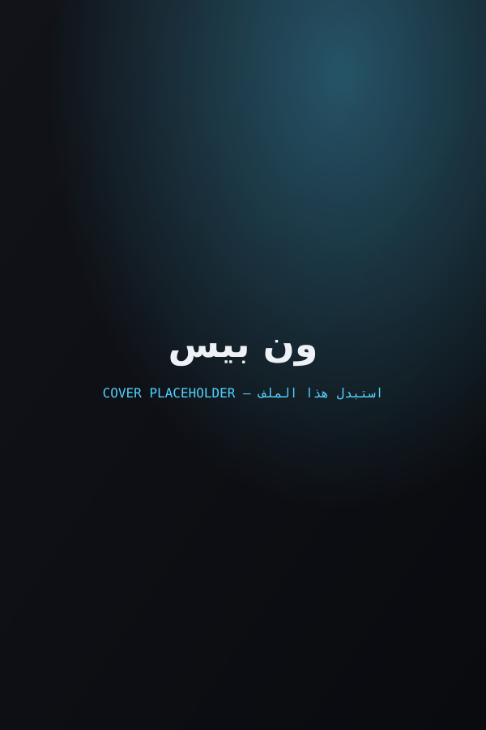

يحكي العمل قصة مونكي دي لوفي، فتى صعد جسده خصائص مطاطية بعد تناوله فاكهة شيطانية، وهو ينطلق برفقة طاقمه "قراصنة قبعة القش" في مغامرة عبر البحار بحثًا عن أعظم كنز في العالم المعروف باسم "ون بيس"، طامحًا لأن يصبح ملك القراصنة.